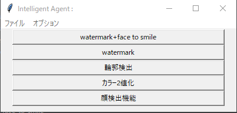

Machine-Manual-ja
17.06.Beta
CG
algorytm
framework 比較
framework workflow
image
image（画像生成）
image（その他）
Free Fem 流体計算
100knockout
face to smile
UI部分作成用
ボタンごとの関数
共通部分
music jenre
openCV
scikit-image
image（画像選択）
kaggle
mindmap png
ml scratch スクラッチでの実装
nlp 自然言語処理
Python
Data Scientist 統計学
web application framework etc
Machine-Manual-ja
Docs
»
image
»
image（その他）
»
face to smile
Edit on GitHub
face to smile
¶

UI部分作成用
¶
face_to_smile main_app
ボタンごとの関数
¶
face_to_smile fn_smile_watermark
登録フォルダ全ての画像の顔部分にsmile画像、 watermark画像を追加します。
face_to_smile fn_watermark
共通部分
¶
face_to_smile fn_common